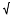

* corner/samplef)
* corner/samplef)
C/C++ Users Journal March, 2005
For many programmers, designing or using digital filters is an occasional experience—maybe smoothing some data or eliminating an annoying bounce at an input. Or it could be that you have an application—a light meter, for instance—that requires that you separate the input into distinct windows. These cases don't really require real-time design; most of the time, you can use an off-the-shelf filter package to come up with the numbers you need.
However, there are times when you have to change parameters in real time, then depend on the results; for instance, if you are working in motion control doing real-time tuning and must provide a means for customers to change filter characteristics to prevent oscillation and disturbances from resonance. Or maybe you have an application (say, an Equalizer or Crossover) that has to tune in real time and do it quickly and accurately.
If you are only an occasional filter user, you probably pull something out of a cookbook and massage it to meet your needs. On the other hand, if you work in areas where critical adjustments are made during the operation of the application, you will need a good set of tools that gives the ability to modify many different aspects of the filter operations in real time. In either case, it would be convenient to have a set of routines that provides you with accurate and reliable results without having to mess with experimentation.
In this article, I give you just that. After examining different filter types and applications, I present templates and code to serve them. This includes solutions for simple averaging, single-order tone controls, parametric filters, and Biquad filters (second-order sections). In doing so, I explain certain audio applications, such as the venerable Linkwitz-Riley filter.
You can't work with filters without some understanding of how to parameterize them, how they differ, and how you use them.
The first thing to know is that for filters to work properly, you must provide samples at precise intervals. They cannot be taken at random (granted, there is technology for working with varying sample rates, but I don't address them here). Whether you are working with an audio bitstream or a bank of statistics, each sample (data point) must be equal time-valued.
The term "precise intervals" implies that you sample at a certain frequency, usually specified in how many times you do this per second; the inverse of this frequency is the interval between samples. At minimum, it is important that you sample at twice the frequency of the highest bandwidth you wish to filter—the "Nyquist limit," which is equal to half the sample rate.
For most applications, this means that if you wish to attenuate all signals above, say, 5 KHz, you must sample that signal more than 10,000 times a second, or over 10 KHz. This is because you need at least two samples of any signal to duplicate it.
Moreover, you must see that there is no data (or other signals) in your signal that is moving at a frequency higher than this Nyquist limit. If there is, your filters will mistake it for energy at another lower frequency and produce distortion or noise.
In a typical application, you would insert an analog filter (or some other bandwidth guarantee) between the "raw" input and your A/D converter to see that no frequency above 5 KHz, as in the aforementioned example, can get through. And you set the sample rate on the A/D to at least 10,000 times a second (10 KHz); better yet, at 20 KHz because you need much less of a filter.
A filter has at least one pass band. This is the frequency range that it passes without attenuation, or with only so much attenuation as you specify. The transition band (or skirt) is that part during which the filter is either increasingly attenuating or increasingly passing your signal. The stop band is that point at which you have reached your target attenuation. Unless, you design it specifically to stop attenuating at a certain frequency, the filter will continue to do so to infinity—of course, it will hit the noise floor in your system before that. It is called the "stop band" because it is the least attenuation you need at a certain frequency and is a parameter that engineers use with the pass band to describe how quickly the filter must switch from passing the signal to attenuating it to the degree you need.
For instance, imagine that the magnitude of your signal before it reaches the filter is normalized to |1|. (For this example, I use a low-pass filter.) Leaving the filter, the signal is still |1| in the pass band, but something less beyond it; see Figure 1.
Next, you need to know how to measure the performance of the filter so that you can determine whether it is right for the job, or in fact, how many of them you need.
You measure the filter's work in decibels. There are two basic viewpoints on decibels that are commonly used in the electrical and signal-processing world. In electrical engineering, the magnitude response of a filter is used as the metric; for an electrical engineer, the dB is:
dB = 10log10(out/in)
making the common reference point for the turn-over point of a filter (-3dB) equal to 1/2.
Signal-processing and audio engineers prefer to use the magnitude-squared response of a filter as the metric, so their definition is:
dB = 20log10(out/in)
So for the audio engineer, -3dB is equal to 1/2=0.707. Here, I use the second definition.
If you have gotten used to the idea of viewing the unaffected signal (before the filter) as |1| and the output of the filter as either greater or less than 1, then you will find using decibels straightforward.
For example, if you want your filter to output no more than 1/10 of 1 percent of the input signal in the stop band, then you want 60dB of attenuation in the stop band:
-60dB=20log10(0.001)
And, of course, if you want the filter to pass 100 percent of the signal in the pass band, then you want 0dB of ripple.
0dB=20log10(1.00)
"Ripple" is any deviation from 100-percent pass through in the pass band before you reach the corner frequency. The corner frequency of a filter is that point at which it stops passing your signal and starts attenuating it (low-pass filter), or stops attenuating your signal and starts passing it (high-pass filter), or in the case of the band pass and notch filters, you have two corner frequencies—one for each transition from off (attenuation) to on (passing) or vice versa.
There are two commonly used filters types (although there are, in fact, many more than these): An FIR (Finite Impulse Response) and an IIR (Infinite Impulse Response). IIR involves feedback, while FIR does not. In this article, I deal only with one FIR filter—the moving average. Typically, the IIR filter requires far fewer coefficients and samples than does the FIR to produce the levels of attenuation you might specify. But because the IIR involves feedback, it can also produce phase perturbations in the signal that can make it difficult to work with arithmetically (addition and subtraction) as well as spatially for audio work. FIR filters do not use feedback and are capable of linear phase results that can easily be compensated for in processing.
IIR filters also possess a parameter resulting from this feedback that affects its frequency response at the corner frequency. The parameter is basically measured two ways, either in Q (resonance) or Bandwidth (the width frequency range between the -3dB points in a peaking or notch filter).
Certain settings, which produce useful results, have been frozen into what are called "characteristics"—Butterworth, Chebyshev, and others. Here I deal with the Butterworth characteristic for the most part. This is really just a filter designed to be maximally flat in the pass band, with a Q of 1/2. This filter also possesses a smooth phase characteristic, making it useful for summing and differencing with minimal trouble. This is one of the most popular forms of IIR filter.
To illustrate, I measure the corner frequency at the -3dB point; this and the Q of 1/2 comprise the Butterworth characteristic. Of course, it is possible to make all sorts of specialty filters with the algorithms here. To get up and going with useable filters, it might be wise to start with a standard.
This leaves us with one parameter that we need to control and that is the corner frequency. When moving from continuous time processing to finite sample rates, you no longer fit on that stretch of line that goes to infinity on the s-plane. Instead, you are in a closed circle on something called the "z-plane." To get the same response from digital filters as you would expect from analog filters, you must prewarp the frequency; that is, you must design a filter using a frequency that is skewed to fit on the unit circle to get the same results. For most of the band, this is a close fit; for the extremes, especially up near Nyquist, it can be off somewhat.
Nonetheless, you don't have to worry about this, as the translation is built into the algorithm I present. The functions take the frequency you choose and apply the prewarp to adjust the frequency and Bilinear Transform to calculate the poles and zeros in the z-plane.
The moving average is a common filter type used by software engineers. Technically, it is an FIR filter that is often misapplied because, depending on the smoothing needed, this type of filter can require a great number of data points to get data smooth enough for use compared to others. Still, it is simple and familiar and is often the first technique tried.
The group delay (this is the time for the signal on the input to make it to the output) for such a filter is equal to 1/2 of its length. If you are sampling at 48 KHz and want a group delay of, say, 1 millisecond (a turnover frequency of about 1 KHz), you need an average of 96 samples to implement this filter, as opposed to just two with a single-order IIR filter.
If you have plenty of memory, you can maintain the moving average fairly economically. Instead of adding all the samples together and dividing, you maintain a pointer into the sample buffer. This pointer is incremented with each sample. When a new sample comes in, you first subtract the old sample (the one the pointer is pointing at) from the accumulated value, then store the new sample in the position the pointer is at and add the new value to the accumulated total. That's the filter output.
You will be using a rotary buffer: Choose one of a convenient binary length, so that you can divide by simply shifting the value rather than using a full divide. You need to proportion your values to the buffer size so that there is no overflow, and you need to remember to initialize the buffer to zero before using it to prevent random values from skewing your average. Such a moving average only requires pointer manipulation, a shift, add, and subtraction.
Nonetheless, the length required to handle even a simple job is usually very high. There are many applications in audio and signal processing that require the performance and phase characteristics of the FIR—an ideal accumulator or linear phase EQ, for instance. But if you are not working on one of these, you should probably look to another filter.
The single-order IIR filter is a simple filter to implement and rolls (attenuates) off at a rate of 6dB per octave at its corner frequency until it meets the noise floor of the application. In addition, this filter has smooth phase characteristics, allowing it to be easily summed or differenced with other single-order filters without reversals turning the sum of difference into just the opposite. A first-order, high-pass or low-pass filter is probably one of the most popular filters in use. Its implementation is simple:
y[n] = bx[n]-bx[n-1]+ay[n-1] high pass y[n] = bx[n]+bx[n-1]+ay[n-1] low pass
Solving for the coefficients [a,b] is easy, as well. First, you need to set the sampling frequency (how many times a second will you be sampling this data point):
Samplef = 10000; // 10 KHz for this example.
// For best performance
// it should be more than
// twice the frequency you
// are interesting in calling
// your corner frequency.
Then, you select the analog frequency you wish to start attenuating at (down 3dB or half power):
Corner = 1000; //1KHz. Corner frequency or cutoff frequency
The algorithm prewarps it to get a frequency that performs the same in a digital filter:
alpha = tan (
We then substitute alpha into the Bilinear Transformation used to calculate the filter coefficients to get a:
a = (1 - alpha)/(1 + alpha)
and then use a to solve for b:
b = (1 + (+/-)a)/2
The (+/-) before the a coefficient is the difference between a high-pass and a low-pass coefficient. If a is positive, it develops a high-pass coefficient; if a is negative, it develops a low-pass coefficient.
I use that simple difference to write just one routine to solve for the coefficients, and to create the filter function itself. You do this by defining the variable hpf as +1.0 and lpf as -1.0 and use them as multipliers in both the calculation routine and filter function. In this way, you can create and cascade or parallel these filters on the fly when the filter is calculated, and the type is maintained in the filter structure itself.
The algorithms and defines for these two filters are contained in Listings 1 (first_ord.h) and 2 (first_ord.c). Figure 2 shows Audio Precision plots made of the performance of the filters.
Long a staple of the analog world, the state variable filter is very useful. It boasts four simultaneous outputs: low pass, band pass, high pass, and notch. This is a second-order filter, which means that the transition band (except band pass and notch, where each transition band is single order) falls at 12dB per octave, making a much steeper fall off than the single-order filter.
The outputs for this filter are developed iteratively from past outputs. You also have control over the Q of the filter: The higher the Q, the more of a bump it has at turnover. So you can build a filter with a Butterworth characteristic (Q of 0.707), or you can create some interesting solutions for some applications that require some boost to correct for deficits in the device they are driving, whether it is a speaker or a room. Applications for this filter may be extended to a simple peaking and notching parametric EQ, if need be.
To use this filter, you call setstate(struct sv *svp, double corner, double samplef, double Que, double fgain). Listing 3 (statevar.h) defines the structure format; Listing 4 (statevar.c) shows the calculation and filter function.
You specify a corner frequency, the sample rate, and the Q (which may be between 0.5 and 5 for best performance), as well as a gain. The filter is of type void, though you can change it. I use it this way so that I can instantiate any number of filters and select the output I desire for a particular need. Figure 3 presents Audio Precision plots made at an arbitrary frequency for Listings 3 and 4.
Biquad second-order sections are a staple of audio engineers. Again, this is second order, and with standard characteristics like the Butterworth, it produces a roll-off of 12dB per octave. But the Biquad is not just one type of filter—it actually serves as a template that can be used for many different characteristics such as Butterworth, Chebyshev, elliptic, and Bessel. Some of these forms have parameters that can be adjusted to produce a better than 12dB roll off. The result is faster transition bands and shorter filters.
There are side effects to some of these filters that make them more appropriate for one application than another. These side effects usually involve phase, which can turn over so rapidly in some forms that summing and differencing the outputs can be hazardous. In this package, I deal with filters developed directly from the analog transfer function and not a special form.
The Biquad calculations and filters I present are computed like the others (see Figure 4). First, you estimate the frequency you are after. The algorithm takes care of prewarping it for use in the digital domain, then the coefficients are calculated by substituting the Bilinear Transform into the analog transfer function.
The filter package in this group (Biquad.c/.h, Listings 5 and 6) was developed from a group of filters put together by Robert Bristol-Johnson for Music-DSP.org and rewritten in C by Tom St Denis. I modified and enhanced this package to fit my needs and am presenting part of it here.
In this package, I also introduce another handy filter, especially for audio work—the shelving filter (see Figure 5). These filters don't roll off forever (or until they hit the noise floor) like the others; instead, they roll off a prescribed amount and then flatten out with the magnitude remaining constant at this new level.
An example of the usage is in Dolby noise reduction type B, in which the corner frequency of a filter is controlled by the available energy in the band with a shelf 5dB below the pass band. When there is no significant energy in the band, the corner frequency of the filter is pulled back, reducing the amount of hiss and other media-related noises. When there is real energy there, the corner frequency is moved out to contain the frequencies where the energy is and then rolls off. This removes the audible hiss but maintains the presence.
To use these filters, you call biquad *BiQuad_new(int type, smp_type dbGain, smp_type freq, smp_type srate, smp_type BW_Q_SH, smp_type S);. You need to indicate the type of filter (LPF, HPF, and so on), gain in dB, corner frequency, sample frequency, either the bandwidth for peaking/notching filters, the Q for low pass, high pass, or band pass, or the shelving model for the shelving filters, and lastly the transition to the shelf itself.
Not all filter problems are solved with a single Biquad. To get the kind of transition band you often need for an application, you have to cascade the Biquad to produce higher order filters. Need a sixth-order filter? Use three Biquads. Need a seventh-order filter? Three Biquads and a single-order section.
It's that simple and it isn't quite that simple. It is true that you can cascade these to produce the roll-off you want, but you may also have to tickle the parameters for each section in the cascade a bit to get the exact gain and roll-off you want without overflow in a particular section.
Linkwitz-Riley is a popular audio-filter form consisting of two Butterworth Biquads in cascade, making it a fourth-order filter. But the Butterworth characteristic makes it easy to use for summing and differencing because of the smooth and predictable phase characteristics.
Sooner or later you are going to want to determine how to come up with the right number of Biquad sections for a specific application without having to guess or experiment. This is how you do it: Call the function float forder(smp_type Apass, smp_type Astop, smp_type Fpass, smp_type Fstop, smp_type Fsamp), which returns a value either exactly the right size or a little bit better than necessary to do the job you specify for it.
Recalling Figure 1, I set the pass band equal to 1 and the stop band to something less than that. The order of the filter depends upon the amount of ripple you allow in the pass band, the amount of attenuation you require in the stop band, and just how short you want the transition band to be.
Say you are trying to get rid of some high-frequency hiss that becomes apparent at 6 KHz, but you want to pass signal well up to 5 KHz and are sampling at 20 KHz. That means that at 5 KHz, you can tolerate the signal dropping to 70 percent its actual value, and it must be no greater than 1 percent by 6 KHz to avoid the hiss.
To get the values for this routine, you need to calculate decibels:
dB=20log10(percentage_of_deviation)
For this example, 1 percent (stop band output) is equal to -40dB or 40dB of attenuation, and 70 percent (pass band maximum ripple) is equal to -3dB or 3dB of attenuation. So you call this routine as float forder(3.0, 40.0, 4000.0, 5000.0, 20000.0) and find that you need an eighth-order filter to do the job. The actual requirement is just over seven, but since the Biquads come in second-order sections and single-order filters come in first-order seconds sections, you need an integer. Rounding up you get eight, which is four Biquads.
This article only covers a part of filter technology. Still, you should be able to use this code and these definitions to control and even instantiate filters in real time. The calculation routines can be run while the application is running and the filter parameters can all be changed on the fly.